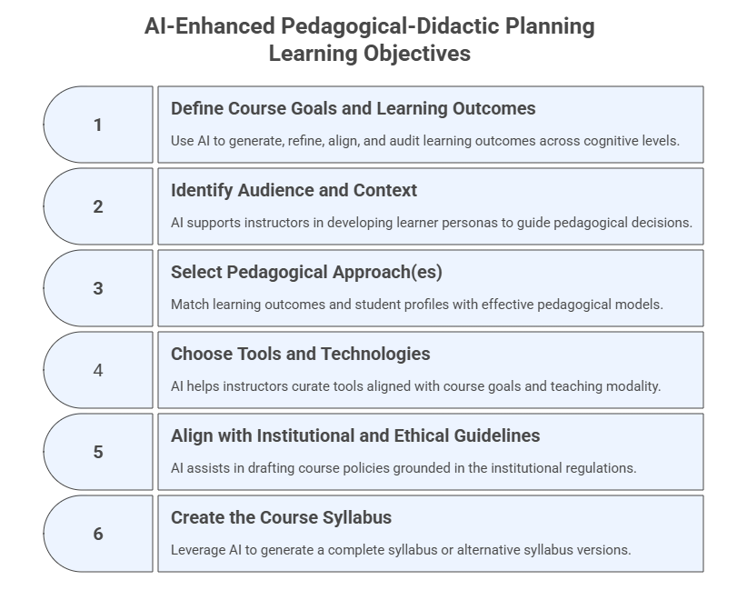
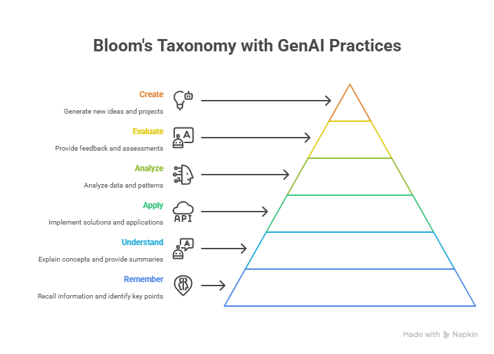

2. AI-Enhanced Pedagogical-Didactic Planning#
Strategic and intentional groundwork for teaching
This module focuses on the strategic and intentional groundwork for teaching. It involves defining course goals and learning outcomes, identifying the audience and context, selecting appropriate pedagogical approaches, choosing educational technologies and AI-enhanced tools, aligning with institutional and ethical guidelines, and creating the course syllabus. You will explore how generative AI can assist with tasks like drafting learning outcomes using frameworks such as Bloom’s Taxonomy and generating draft policies.
Note: All prompts that you use from this module onwards should be made within your AI Workspace, because this will ensure that you build upon the project you created and all developments are consistent with the instructions provided and knowledge base uploaded.
Learning Objectives#
After completing this module, participants will be able to:
Draft and refine course goals and measurable learning outcomes using Bloom’s Taxonomy.
Generate learner profiles, identify audience and context.
Select pedagogical approaches aligned with outcomes and AI-enhanced teaching strategies.
Choose appropriate AI tools and technologies for planning, delivery, and assessment.
Align course elements with institutional and ethical guidelines.
Use AI to draft, audit, and refine complete syllabus documents.
Integrate prompt engineering and context engineering in planning workflows.

2.1 Define Course Goals and Learning Outcomes#
Purpose#
Use AI to generate, refine, align, and audit learning outcomes across cognitive levels.
Prompt Template — Instructional + Role-Based
You are a higher-education instructional designer.
Propose the course goals and generate 4–6 measurable learning outcomes for a course titled [Course Name].
Use Bloom’s taxonomy across different levels and focus on skills related to [insert skills].
Present results in a table: Outcome | Bloom Level | Example Assessment.
Note: In the prompt above you can add or attach a course description or materials to guide the model in the creation of the learning outcomes. These contents could alternatively be added as files in your workspace (project).
Additional Prompt Variant — Alignment Check
Check whether the learning outcomes below align with Bloom’s taxonomy levels.
Identify any non-measurable verbs and suggest revisions.
[Type or paste the LO here]
Click on the link below to see the Bloom’s Taxonomy & GenAI Teaching Practices artifact generated by Claude.ai. Click on any level of Bloom’s Taxonomy to explore specific GenAI teaching practices and tools that support learning at that cognitive level. Each practice is designed to enhance student engagement and deepen understanding through AI-assisted instruction.
https://claude.ai/public/artifacts/b64d5dd0-17b7-40b4-81c4-67041fbf8810
Instructional Prompt Used in Claude.ai to create the Interactive Artifact above
Teaching and Learning with AI. Create a diagram of Bloom’s Taxonomy pyramid with example verbs for each level (Remember → Create), linking each level to potential GenAI teaching practices.

2.2 Identify Audience and Context#
Purpose#
AI supports instructors in developing learner personas that guide pedagogical decisions.
Prompt Template — Role-Based
You are an instructional designer. Create a learner profile for a course on [Course subject].
Include: background knowledge, experience, motivations, tech comfort level, possible challenges, and accessibility considerations.
Present in a table.
Additional Prompt Variant — Multiple Profiles
Create three learner personas for a course on [Course Topic]: beginner, mixed-background, and advanced.
Describe needs, risks, and recommended adaptations for each.
2.3 Select Pedagogical Approach(es)#
Purpose#
Match learning outcomes and student profiles with effective pedagogical models.
Prompt Template — Chain-of-Thought
Given the learning outcomes and audience profile below,
identify three pedagogical models that fit this course.
For each, reason step-by-step how it supports the outcomes,
and give two examples of how AI can enhance activities in that model.
[Paste the learning outcomes and profile here]
Additional Prompt Variant — Activity Generator
Generate 4 AI-enhanced sample activities using the selected pedagogical model.
Include Bloom level, estimated time, and resources needed.
2.4 Choose Tools and Technologies#
Purpose#
AI helps instructors curate tools aligned with course goals and teaching modality.
Prompt Template — Zero-Shot
List 5 generative AI tools most suitable for teaching the course [Course Title].
For each, describe one educational use and one limitation or risk.
Present results in a table.
Additional Prompt Variant — Matching Tools to Activities
Given these planned learning activities [paste],
suggest the best AI tool for each one of them and explain how each tool supports the task.
2.5 Align with Institutional and Ethical Guidelines#
Purpose#
AI assists in drafting course policies grounded in the institutional regulations.
Institutional Policies#
The general FGCU AI use policies are available at the link below: https://www.fgcu.edu/about/leadership/officeoftheprovost/generative-ai
The following files contain the general FGCU policies for GenAI use. Download them and use as the institutional policies for GenAI use.
Student_Code_of_Conduct
General_FGCU_GenAI_Policies
Core_Syllabus_Policies_Statements
Note: These documents should be added to the course personalized assistant and workspace (project) so that they become part of the knowledge base to be used in future interactions and developments.
Prompt Template — Few-Shot + Document Grounding
Using the AI use policy examples below and the institutional policy documents attached,
draft an “AI Use Policy” for the course [Course Title] that incorporates transparency, accountability, and fairness.
Examples of AI use policies for learning:
1. Submitting the work of another person or entity as your own is not permitted. “Entity” includes Generative AI tools such as ChatGPT.
2. Receiving assistance that has not been authorized by the course instructor is not permitted. This includes assistance from Generative AI tools.
3. Students should not use sources that go beyond those authorized by the instructor. This includes using Generative AI tools as a source.
Include:
1. Intro paragraph explaining what AI is and contextualizing its use.
2. Acceptable uses.
3. Unacceptable uses.
4. Citation requirements and examples.
5. Requirement to list prompts used.
6. Summary table of allowed / restricted / prohibited uses.
Additional Prompt Variant — Student-Friendly Version
Rewrite the AI Use Policy above in student-friendly language at a 9th-grade readability level.
2.6 Create the Course Syllabus#
Purpose#
Leverage AI to generate a complete syllabus or alternative syllabus versions.
Prompt Template 1 — Instructional with syllabus template attached
Using the structure of the provided syllabus template, generate a complete syllabus
for [Course Title]. Maintain all required sections and ensure alignment
with the institutional policy documents. Include a detailed weekly schedule.
Prompt Template 2 — Instructional with syllabus included in the prompt
Note: To run the prompt below you will have to add the specific information of your course. Part of the information can be added as background knowledge to your AI workspace, for example, your professional data.
Use the structure and style of the provided example syllabus, including sections for course information, professor information, course description, course program, bibliography, student learning outcomes, instructional method, evaluation and grade assignments, assignments, final exam, attendance policy, student contact information, notes, core syllabus policies, and a tentative weekly schedule.
Fill in the placeholders with the relevant information for your course.
1. Course Information
- Course Number: [Enter course number]
- Course Title: [Enter course title]
- Semester/Year: [Enter semester and year]
- Offering College/Department: [Enter college and department]
- Credit Hours: [Enter credit hours]
- Meeting Times/Location: [Enter meeting times and location, e.g., M/W 13h30 - 14h45, HE 202]
- Method of Delivery: [Enter delivery method, e.g., Face-to-face class]
- Course URL: [Enter course URL]
- Prerequisites: [Enter prerequisites, e.g., Not applicable]
2. Professor Information
- Instructor: [Enter instructor name and title]
- Office Address: [Enter office address]
- Office Phone: [Enter office phone]
- E-mail Address: [Enter email address]
- Office Hours: [Enter office hours]
3. Course Description
[Provide a brief description of the course.]
4. Course Program
[List the main topics or modules.]
5. Bibliography
[List recommended or required texts in the format [Author], [Title], [Edition], [Publisher], [Year].]
6. Student Learning Outcomes
[Specify learning outcomes, e.g., Upon successful completion of this course, the student will be able to:]
7. Instructional Method
[Describe the teaching approach.]
8. Evaluation and Grade Assignments
[Describe assessment instruments and grading policy.]
9. Assignments
[Describe assignment policies.]
10. Final Exam
[Describe final exam policy.]
11. Attendance Policy
[Describe attendance policy.]
12. Student Contact Information
[Describe communication policy.]
13. GenAI Use Policies
Taking into account the institutional AI Policies uploaded in the project workspace, propose core GenAI use policies adequate for this course.
14. Tentative Weekly Schedule
Provide a tentative schedule, e.g.,
| Week | Date | Topic | Chapter |
|------|------|-------|---------|
| 1 | [Date 1, Date 2] | [Topic 1] | [Chapter 1] |
| 2 | [Date 1, Date 2] | [Topic 2] | [Chapter 2] |
| 3 | [Date 1] | [Topic 3] | [Chapter 3] |
| ... | ... | ... | ... |
| 16 | [Date] | [Topic 16] | [Chapter 16] |
Additional Prompt Variant — Alternative Formats
Generate three syllabus variants:
1) detailed instructor version,
2) one-page quick student guide,
3) accessibility-friendly version (WCAG).
2.7 Updates to Your AI Workspace and Personalized Assistant#
This section summarizes the main updates to your AI Workspace (Project) and Course Personalized Assistant (PA) to ensure both tools evolve consistently as you progress in this program.
A. Updates to Your AI Workspace (Project)#
Your Workspace is the persistent memory environment that stores course materials, policies, templates, prompts, and all artifacts created during this program. After completing Module 2, apply the updates below.
Upload New Files to the Workspace Knowledge Base: institutional AI policies, course syllabus, optional additional materials (e.g., accreditation requirements, reading lists, etc.)
Update Workspace Instructions: modify the Project’s instruction block to reflect new responsibilities.
Add under How You Work:
- Use uploaded institutional GenAI policies as primary references for all policy‑related outputs.
- Ensure alignment between learning outcomes, activities, pedagogical approaches, and assessments.
- Audit syllabi for internal consistency across dates, expectations, and learning outcomes.
Add under Capabilities:
- Learning outcome alignment checks
- Pedagogical model recommendations
- Syllabus generation, auditing, and refinement
- Policy drafting grounded in institutional documents
- Mapping outcomes → activities → assessments
Add under Behaviors:
- Flag inconsistencies or missing elements and suggest revisions.
- Reflect the institution GenAI policies when generating or updating course materials.
Note: If the model you are using restricts the amount of information you can add as instructions in your workspace, then prompt an AI model to summarize the instructions for you.
B. Updates to Your Course Personalized Assistant (PA)#
Your PA becomes a more accurate and responsible tutor by integrating new materials and constraints.
Upload New Files to the PA Knowledge Base: syllabus, approved GenAI Use Policy, course learning outcomes, weekly schedule, institutional GenAI policy documents.
Update PA Instructions:
Add under Core Role / Mission:
- Use only uploaded course materials when answering student questions.
- Reference the GenAI Use Policy whenever students ask about AI usage.
Add under Behaviors:
- Cite relevant sections of the syllabus when responding to student questions.
- If the question touches academic integrity or unclear areas, respond:
‘I may need more context or the original file. Please refer to the syllabus or ask your instructor.’
Add under Safety & Boundaries:
- Never provide answers to graded assignments or exams.
- Redirect users to the instructor if they seek prohibited support.
Add New Conversation Starters for Students:
Explain the learning outcomes of this course at beginner and advanced levels.
Summarize the policies on how AI may be used in this course.
How do the learning outcomes connect to our assignments?
C. Workflow Adjustments Going Forward#
1. All Module 2+ prompts must be issued inside the Workspace To ensure:
Document grounding
Consistency across versions
Accurate policy integration
Alignment across modules
2. Build incremental outputs instead of isolated chats (each chat should represent one specific set of actions) Examples:
Draft → revise → audit → finalize
Outcomes → pedagogy → assessments → syllabus integration
3. Use the PA strictly for student‑facing support
Workspace = design environment
PA = learning support environment
4. Update both tools continuously As you progress through Modules 3–8, upload:
Slides
Assignments
Activity plans
Updated schedules
Assessment rubrics
Course feedback summaries
D. Summary Table of Required Updates#
Component |
Required Update |
Purpose |
|---|---|---|
Workspace Knowledge Base |
Upload policies, syllabus drafts, LOs, learner profiles, pedagogical mappings |
Grounded, consistent outputs |
Workspace Instructions |
Add alignment, auditing, and policy‑compliance behaviors |
Improve quality and coherence |
PA Knowledge Base |
Add syllabus, policies, LOs, schedule |
Accurate student guidance |
PA Instructions |
Add boundaries, policy references |
Responsible and safe use |
Conversation Starters |
Add LO, policy, and schedule prompts |
Direct student guidance |
Workflow |
Use Workspace for all prompts |
Preserve continuity and alignment |
2.4 Exercises#
Exercise 1 — Generate and Map Learning Outcomes#
Goal: Use AI to create measurable, aligned learning outcomes.
Steps:
Paste your course description.
Use the LO generation prompt.
Choose the best outcomes.
Ask AI to map each outcome to:
activities
assessments
Bloom level
Prompt:
Map each of the following learning outcomes to:
1) teaching activities, 2) assessment examples, 3) Bloom level.
Present results in a table.
Exercise 2 — Create a Learner Profile#
Goal: Develop an AI-assisted learner persona.
Steps:
Paste course context.
Use the profile prompt.
Request two persona variants.
Compare adaptations needed.
Exercise 3 — Select Pedagogical Models#
Goal: Identify pedagogical models aligned with outcomes and audience.
Steps:
Provide learning outcomes and personas.
Use the chain-of-thought prompt.
Select one model and refine it with:
Generate 3 learning activities aligned with this model and the outcomes.
Exercise 4 — Draft AI Use Policies#
Goal: Produce a policy aligned with the institution guidelines.
Steps:
Load the institution policy documents.
Use the few-shot policy prompt.
Request:
strict version
moderate version
flexible version
Choose one to include in syllabus.
Exercise 5 — Produce a Syllabus Draft#
Goal: Create a complete syllabus using the course template.
Steps:
Paste the long syllabus prompt.
Provide course-specific information.
Request:
full syllabus
1-page summary
weekly schedule
Run consistency audit:
Audit this syllabus for inconsistencies, missing elements,
and misaligned learning outcomes.
2.5 Reflection#
Which planning tasks benefited most from AI?
Where was human expertise essential?
Did AI propose improvements you had not considered?
How will this module influence your next course redesign?